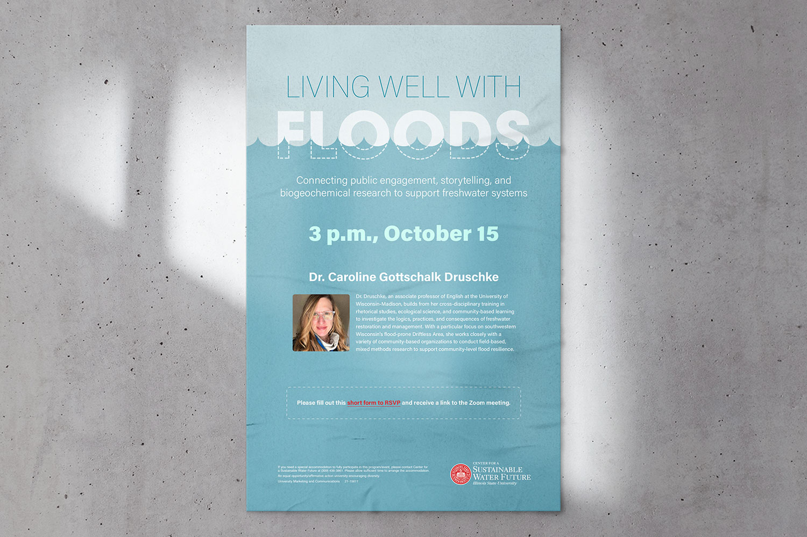
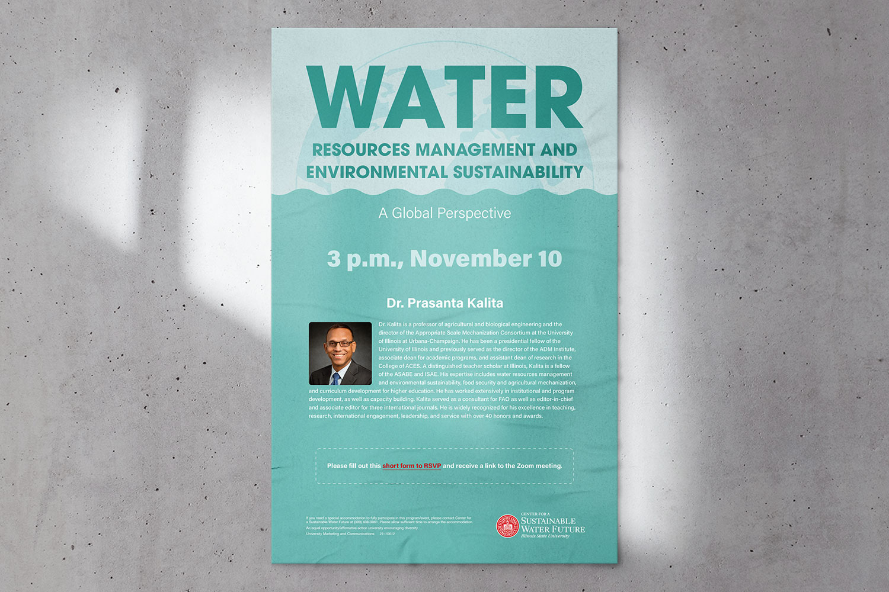
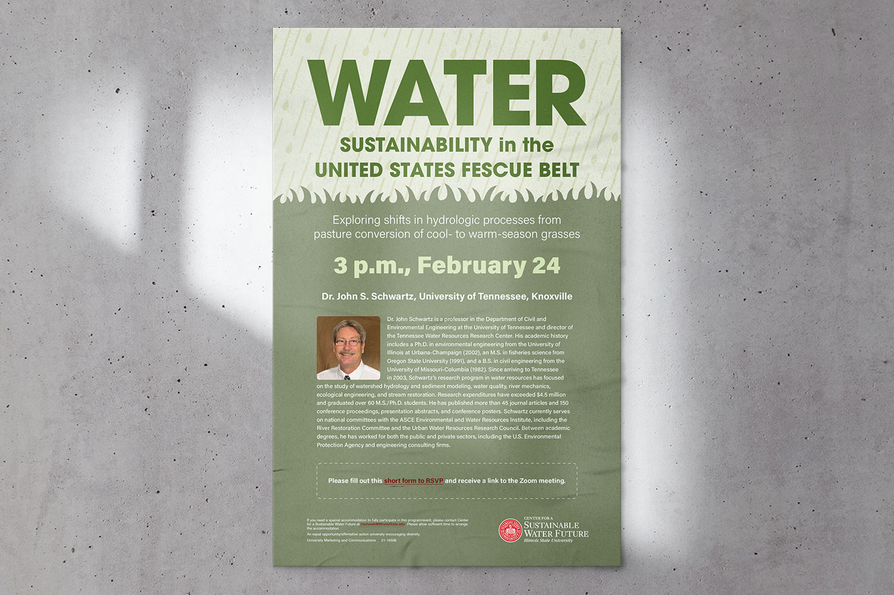
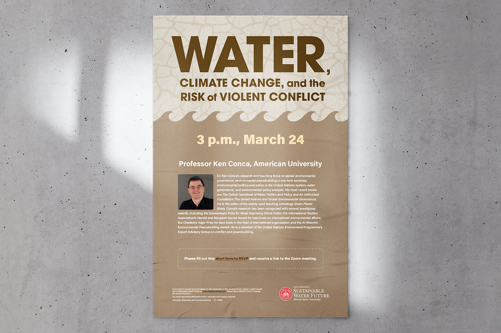

Living well with floods
Dr. Druschke, an associate professor of English at the University of Wisconsin-Madison, builds from her cross-disciplinary training in rhetorical studies, ecological science, and community-based learning to investigate the logics, practices, and consequences of freshwater restoration and management. With a particular focus on southwestern Wisconsin's flood-prone Driftless Area, she works closely with a variety of community-based organizations to conduct field-based, mixed methods research to support community-level flood resilience.

Water resources management
and environmental sustainability
Dr. Kalita is a professor of agricultural and biological engineering and the director of the Appropriate Scale Mechanization Consortium at the University of Illinois at Urbana-Champaign. He has been a presidential fellow of the University of Illinois and previously served as the director of the ADM Institute, associate dean for academic programs, and assistant dean of research in the College of ACES. A distinguished teacher scholar at Illinois, Kalita is a fellow of the ASABE and ISAE. His expertise includes water resources management and environmental sustainability, food security and agricultural mechanization, and curriculum development for higher education.

Water sustainability
in the united States fescue belt
Dr. John Schwartz is a professor in the Department of Civil and Environmental Engineering at the University of Tennessee and director of the Tennessee Water Resources Research Center. His academic history includes a Ph.D. in environmental engineering from the University of Illinois at Urbana-Champaign (2002), an M.S. in fisheries science from Oregon State University (1991), and a B.S. in civil engineering from the University of Missouri-Columbia (1982). Since arriving to Tennessee in 2003, Schwartz’s research program in water resources has focused on the study of watershed hydrology and sediment modeling, water quality, river mechanics, ecological engineering, and stream restoration.

Water, climate change,
and the risk of violent conflict
Dr. Ken Conca’s research and teaching focus on global environmental governance, environmental peacebuilding in war-torn societies, environmental politics and policy in the United Nations system, water governance, and environmental policy analysis. His most recent books are The Oxford Handbook of Water Politics and Policy and An Unfinished Foundation: The United Nations and Global Environmental Governance. He is the editor of the widely used teaching anthology Green Planet Blues. Conca's research has been recognized with several prestigious awards, including the Grawemeyer Prize for Ideas Improving World Order.